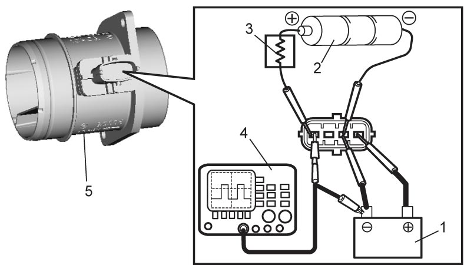
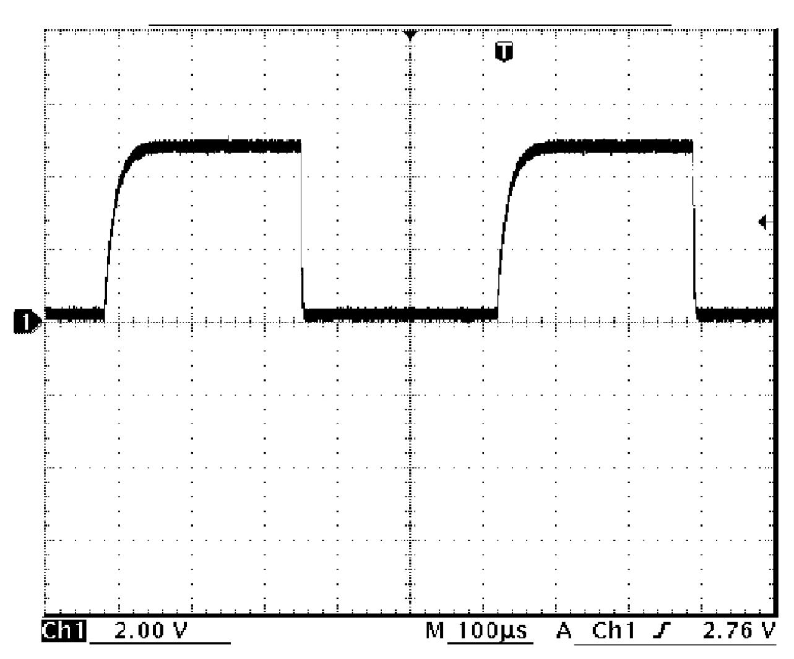
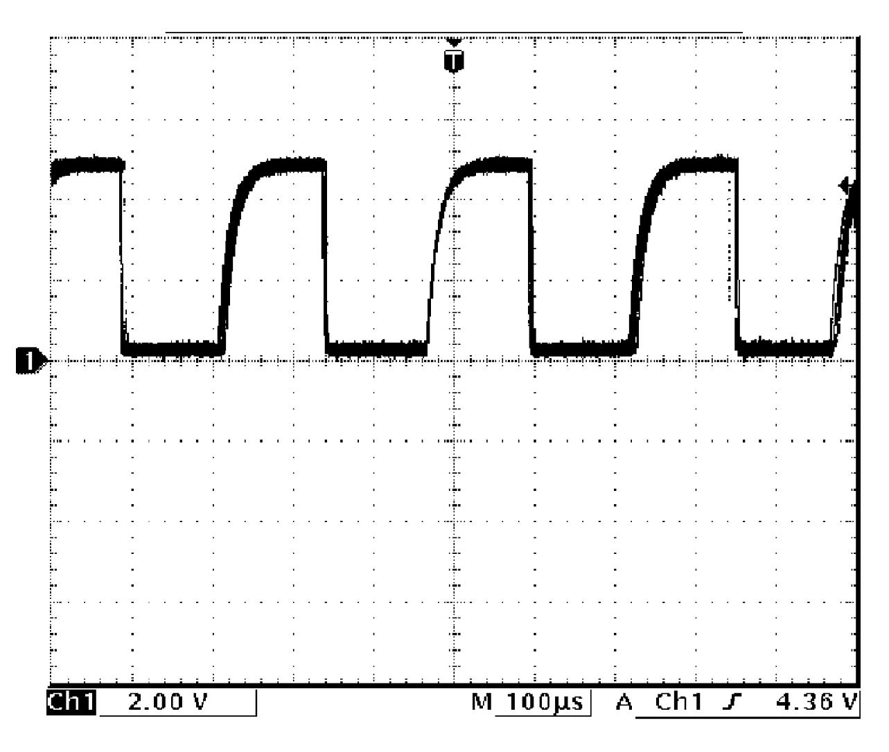
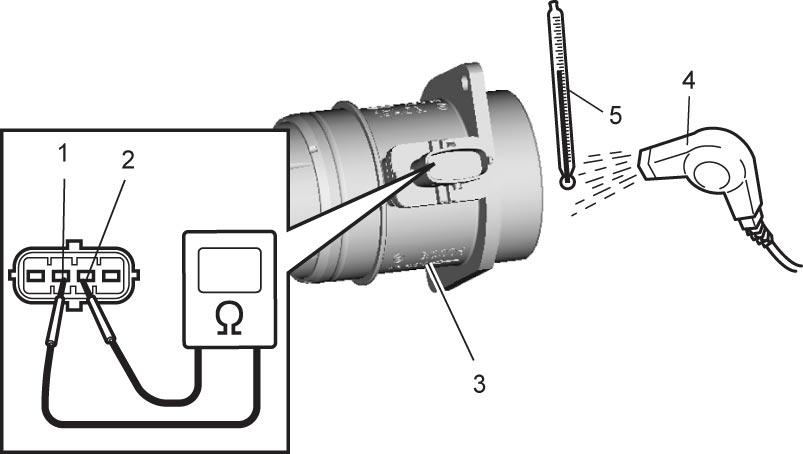

1C
| MAF Sensor with IAT Sensor-1 Inspection |
NOTICE:
The MAF sensor with IAT sensor-1 will be damaged if exposed to a temperature higher than 100 °C (212 °F).
Do not heat the MAF sensor with IAT sensor-1 to a temperature higher than 100 °C (212 °F).
MAF Sensor
1)Arrange 3 new 1.5 V batteries (2) in series, and check that total voltage is 4.5 to 5.0 V.
2)Connect 12 V battery (1), batteries (2), 1.2 kΩ resistance (3) and oscilloscope (4) to MAF sensor with IAT sensor-1 (5) as shown in figure.


 "Expand image")
3)Check signal waveform changes depending on amount of blowing air as shown in figures. If faulty condition is found, replace MAF sensor with IAT sensor-1. 
Blowing air: Small

 "Expand image")
Blowing air: Large

 "Expand image")
IAT Sensor-1
Measure resistance between sensor terminals (1) and (2) while blowing hot air against temperature sensing part of MAF sensor with IAT sensor-1 (3) using hot air drier (4). If check result is not as specified, replace MAF sensor with IAT sensor-1.
IAT sensor-1 resistance
–20 °C (–4 °F): 13 to 15 kΩ
20 °C (68 °F): 2 to 3 kΩ
60 °C (140 °F): 0.5 to 0.7 kΩ

 "Expand image")
| 5. | Thermometer |